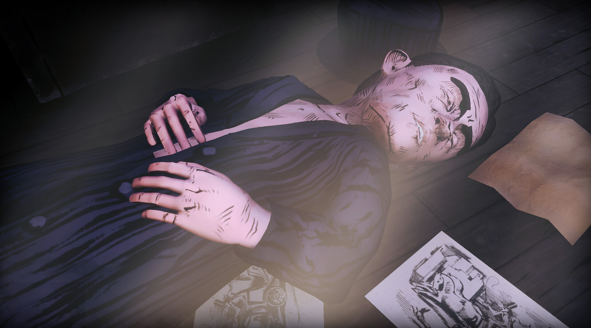
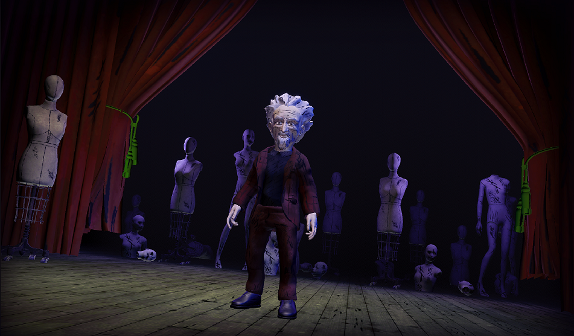
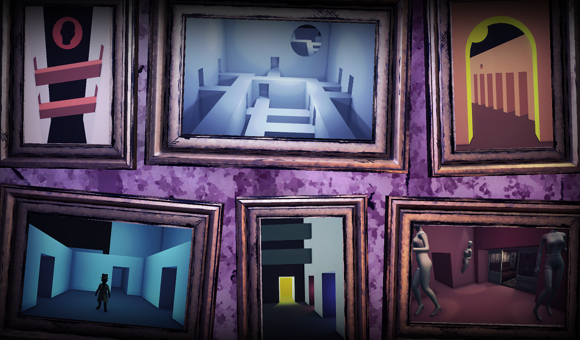

Gra przygodowo-horrorowa, w której będziesz eksplorować nawiedzone labirynty, spotykać dziwne postacie i udać się do tajemniczego alternatywnego świata, by spotkać się ze swoim zmarłym ojcem. Gra oparta jest na twórczości surrealistycznego pisarza i artysty plastyka Bruno Schulza.
Hourglass Sanatorium to gra przygodowo-horrorowa, w której będziesz eksplorować nawiedzone labirynty, spotykać dziwne postacie i udać się do tajemniczego alternatywnego świata, by spotkać się ze swoim zmarłym ojcem. Gra oparta jest na twórczości surrealistycznego pisarza i artysty plastyka Bruno Schulza.
Współpraca z dwójką bardzo rozpoznawalnych aktorów głosowych do głównych ról w polskim dubbingu
Ojciec - Tomasz Grochoczyński (Arktos z Tabalugi, Torbjorn z Overwatcha, Vlad z Hotelu Transylwania, Mefisto z Diablo)
Józef - Jarosław Domin (Legendarny głos Obi Wana z Gwiezdnych Wojen, Pinokio ze Shreka)
Byłem odpowiedzialny za całą architekturę gry Hourglass Sanatorium od pierwszej linii kodu. Zaprojektowałem i zbudowałem strukturę kodu, mechaniki rozgrywki oraz UI.



Projektowania i implementacji architektury gry w Unity (C#), tworzenia złożonych mechanik (w tym systemów nieeuklidesowych i zagadek), budowy systemów UI oraz pracy zespołowej przy produkcji gry z elementami narracyjnymi i dubbingiem.